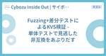

Cybozu Inside Out | サイボウズエンジニアのブログ
https://blog.cybozu.io/
サイボウズ株式会社、サイボウズ・ラボ株式会社のエンジニアが提供する技術ブログです。製品やサービスの開発、運用で得た技術情報やエンジニアの活動、採用情報などをお届けします。
フィード

Fuzzing+差分テストによるKVS検証 - 単体テストで見逃した非互換をあぶりだす
Cybozu Inside Out | サイボウズエンジニアのブログ
Cloud Platform部の萩原です。 Cloud Platform部では、Cybozuのクラウドサービス「cybozu.com」の提供基盤をVMベースの旧基盤からKubernetesベースの新基盤（Neco）へ移行するミッションに取り組んでいます。現在は、Cybozuのセッションストアとして旧基盤上にホストされているMemcached互換のKVSを、新基盤に移行するプロジェクトに取り組んでいるところです。 本記事では、新規実装されたKVSと旧実装の互換性の問題を、Fuzzingと差分テストを用いることで、個々の操作列を手で列挙する負担を減らしながら検出する方法を紹介します。 KVS移行に…
2日前
3Dプリンタ、ギャルネイル、eスポーツ。「業務の話禁止」の社内LT会で見えたサイボウズの文化 1
1
Cybozu Inside Out | サイボウズエンジニアのブログ
こんにちは！サイボウズの社内コネクトチームのhokatomo(@tomoko_and)です。このチームでは開発系の社内イベント担当しています。 最近、私は同僚と歩数対決をしているんですが、歩数を稼ぐために20km以上走ったら、相手も同じくらい走ってきて、もはや泥試合です!! といったように、普段一緒に仕事をしていても、その人が仕事以外で何にハマっているのか、何を「面白い！」と思っているのかは意外と知りません。だったら、そこだけを話すLT会をやってみよう!!!というのが今回の「業務の話禁止」のLT会です。 話しながらスシを食べるから = 話スシ サイボウズでは社内LTの一部を「話スシ」と呼んでい…
12日前

サイボウズのログ基盤 2026年版 ― Apache Iceberg × Trino によるアーキテクチャ刷新
Cybozu Inside Out | サイボウズエンジニアのブログ
はじめに こんにちは。ログ基盤チームの吉本です。 cybozu.com では、2018年のブログ記事でご紹介したログ基盤を長期にわたって運用してきましたが、このたびサイボウズの Kubernetes 基盤である Neco へ移行しました。 今回の移行では、旧ログ基盤が抱えていた課題や移行に伴う制約を踏まえ、アーキテクチャを全体的に刷新しています。 本記事では、この新しいログ基盤の全貌についてご紹介したいと思います。 blog.cybozu.io はじめに アーキテクチャ刷新のモチベーション Neco に適した構成への見直し ログの発生源に関する制約 新ログ基盤の全体像 ログの収集 LogShi…
18日前
DroidKaigi × iOSDC After Night を開催しました！
Cybozu Inside Out | サイボウズエンジニアのブログ
こんにちは！サイボウズのトニオ（@tonionagauzzi）です。普段はkintone開発チームにてAndroidアプリを主に開発しています。 2026年10月6日（火）にサイボウズ株式会社とSTORES株式会社の合同で DroidKaigi × iOSDC After Night をサイボウズ東京オフィスで開催しました。本記事ではその当日の様子をレポートします！ cybozu.connpass.com 今回のイベントは、DroidKaigiとiOSDCの後にAndroidとiOSのエンジニアが合同で話せる場を作りたいと思い企画しました。 ちゃんくろさんのオープニングトーク Takahash…
19日前
Cilium Conntrack のメトリクス拡張の検証と提案
Cybozu Inside Out | サイボウズエンジニアのブログ
初めに クラウド基盤本部 NWDC 部 Kubernetes ネットワークチームの寺嶋です。Kubernetes ネットワークチームでは 2026 年 8 月 17 日から 2 週間インターンシップを開催し、2 名の方に参加していただきました。 cybozu.co.jp 本記事では、インターンシップで白川さん（@KasumiMercury）に担当していただいた「Cilium Conntrack のメトリクス拡張の検証と提案」というテーマの成果を紹介します。 もう一方の小野さん（@no2ca）さんに取り組んでいただいた成果は別記事で紹介していますので、そちらもあわせてご覧ください。 blog.c…
23日前
Neco 環境における Cilium Multi-Pool IPAM の動作検証
Cybozu Inside Out | サイボウズエンジニアのブログ
クラウド基盤本部 NWDC 部 Kubernetes ネットワークチームの花田です。 この記事では2026年8月にサイボウズで開催していた Kubernetes ネットワークインターンコースにて、インターンの小野さん（@no2ca）に取り組んでいただいた課題とその成果を紹介します。 今回小野さんには、Cilium の IP アドレス管理（IPAM）機能の一つである Multi-Pool IPAM が Neco の Kubernetes クラスタでも動作するか検証していただきました。 もう一方の白川さん（@KasumiMercury）に取り組んでいただいた成果は別記事で紹介していますので、そちら…
23日前
福岡に6杯の"替え玉"が集合！フロントエンド勉強会「替え玉.web」開催レポート
Cybozu Inside Out | サイボウズエンジニアのブログ
替え玉.webの様子 こんにちは、フロントエンドエンジニアのおぐえもん（@oguemon_com）です。 福岡では、9月12日（土）に「フロントエンドカンファレンス福岡」（FECF 2026）が開催され大いに盛り上がりました。 実は、その前日（9月11日（金））の夜、博多駅前にあるサイボウズ福岡オフィスにおいて、FECF 2026のサブイベントとして「替え玉.web」という勉強会を開催していました。 今回は、名前だけでは何をやっているか分かりにくい替え玉.webの開催レポートをお届けします。 替え玉.webとは？ 替え玉.webは、「過去の発表の再演が原則」のWebフロントエンド勉強会です。 …
1ヶ月前
DroidKaigi 2026 にスポンサーとして参加しました！
Cybozu Inside Out | サイボウズエンジニアのブログ
こんにちは！kintone 開発チームの Android エンジニア、トニオ（@tonionagauzzi）です。 2026年9月1日(火)〜3日(木)にベルサール渋谷ガーデンで開催された DroidKaigi 2026 に、サイボウズはゴールドスポンサーとして参加しました！ サイボウズからは、SWE・QA・EM など多様な職種のメンバーが参加しました。この記事では、DroidKaigi 2026 スカラーシッププログラムの一環で実施したサイボウズのオフィスツアーと、会場ブースの様子をレポートします！ スカラーシッププログラムのオフィスツアー 去年に引き続き、今年も DroidKaigi 20…
1ヶ月前
フロカン福岡で、Webとラーソーメンでお腹いっぱいになりました
Cybozu Inside Out | サイボウズエンジニアのブログ
こんにちは、フロントエンドエンジニアのmehm8128です。 2026年9月12日（土）に行われたフロントエンドカンファレンス福岡にて、サイボウズはゴールドスポンサーとして協賛しました。 当日の様子を紹介します。 ブース TSKaigiのときと同様、「サイボウズ エンジニア社員が何でも話します！！」というテーマでブースを出展していました。 blog.cybozu.io 開場前のブースの様子 ブースのイーゼルパッド 予め貼ってある付箋の中から気になったトピックについて質問してもらうか、全く関係ないことでも何でも聞いてもらい、社員が答えるという形式でした。 ブースの様子 トピックとしては、OSS寄…
1ヶ月前
サイボウズの開発組織コンテンツまるわかり ― 開発組織ブランドアワード2026をきっかけに
Cybozu Inside Out | サイボウズエンジニアのブログ
こんにちは！サイボウズの開発広報のhokatomo（@tomoko_and）です。 この度、日本CTO協会が発表した「開発組織ブランドアワード2026」で、サイボウズは6位となりました！このように評価していただき光栄です。 調査方法やランキングの詳細は、日本CTO協会のプレスリリースをご覧ください。 cto-a.org 普段のプロダクト開発や組織づくり、それを社外に伝える発信が「サイボウズの開発組織」のイメージにつながったと思い、うれしく感じます。 評価コメントから見る「サイボウズの開発組織」 今回の受賞にあたり、「革新的／先進的」「働きやすそう／多様な働き方がありそう」「強いプロダクト／技術…
1ヶ月前
W3C Japan 30周年記念イベント Web Together 参加レポート
Cybozu Inside Out | サイボウズエンジニアのブログ
W3C Japan 30 周年記念イベント - Web Togetherがサイボウズ 東京オフィスで開催されました。この記事では、当日行われた4本のライトニングトーク（LT）とパネルディスカッションの様子や印象に残った議論を、サイボウズプロダクトデザイナー 小林の視点でまとめます。
2ヶ月前
kintoneのレガシーコードをAIで再実装してみた
Cybozu Inside Out | サイボウズエンジニアのブログ
初めに kintone チームの前田です。 kintone には結構な量のレガシーコードがあります。 このレガシーコードに対して AI を使って再実装できないかを実験してみました。 先に結果だけお伝えすると、うまく再実装できてコードベースに取り込めたものもあれば、うまくいかないものもありました。 なお、利用したエージェントは Claude Code、モデルは Claude Opus 5 (1M コンテキスト版) です。 AI への指示や情報は、増やせば増やすほど求める実装が生成されやすくなるとは思いますが調整も大変になってくるので、必要最小限にして実験しました。 試行回数についてもどの実験でも…
2ヶ月前
Mythos 対策プロジェクトの 2 ヶ月(まとめ編)
Cybozu Inside Out | サイボウズエンジニアのブログ
Mythos 級 AI 公開に備えてサイボウズが実施した、セキュリティスキャンハーネス開発プロジェクト "Logos" について。今回は、プロジェクトを終えてのまとめです。
2ヶ月前
Mythos 対策プロジェクトの 2 ヶ月(LLM-Wiki 編)
Cybozu Inside Out | サイボウズエンジニアのブログ
Mythos 級 AI 公開に備えてサイボウズが実施した、セキュリティスキャンハーネス開発プロジェクト "Logos" について。今回は、ハーネスに社内の知識を渡す LLM-Wiki "Ergon" について解説します。
2ヶ月前
AI-DLC Unicorn Gymをサイボウズで開催しました
Cybozu Inside Out | サイボウズエンジニアのブログ
こんにちは！開発本部のAI Catalystチームの加瀬（ @Kesin11 ）です。 8/17 - 18にAI-DLCという開発手法を体験するAI-DLC Unicorn GymイベントをサイボウズとAWS様の共同開催で実施しました。サイボウズ内でプロダクト開発に携わっているメンバーが新しいAIネイティブな開発手法に触れた様子をイベントレポートとしてお伝えします。 AI Catalystチームについて その前に、少しだけ自分が所属しているAI Catalystチームについて紹介させてください。 サイボウズでは以前から開発本部のAIやっていきチームが中心となって様々なAI開発ツールを業務で利用…
2ヶ月前
iOSDC Japan 2026 にゴールドスポンサーとして協賛します！
Cybozu Inside Out | サイボウズエンジニアのブログ
こんにちは、iOSエンジニアの @tochi86_ です。 今年も iOSDC Japan の時期が近づいてまいりました。 サイボウズは、2026年9月11日から9月13日に開催される iOSDC Japan 2026 に、ゴールドスポンサーとして協賛いたします！ 「iOSDC Japan」とは、iOS関連技術をテーマとした iOS技術者のためのカンファレンスです。 今年も現地開催＋オンライン配信でのハイブリッド開催が予定されており、有明セントラルタワーホール＆カンファレンスにて開催されます。 iosdc.jp サイボウズでは、kintone / サイボウズOffice / Garoon の3…
2ヶ月前
Mythos 対策プロジェクトの 2 ヶ月(ハーネス編)
Cybozu Inside Out | サイボウズエンジニアのブログ
Mythos 級 AI 公開に備えてサイボウズが実施した、セキュリティスキャンハーネス開発プロジェクト "Logos" について。今回は、中核となるハーネス "Horos" について解説します。
2ヶ月前
Mythos 対策プロジェクトの 2 ヶ月(概要編)
Cybozu Inside Out | サイボウズエンジニアのブログ
Mythos 級 AI 公開に備えてサイボウズが実施した、セキュリティスキャンハーネス開発プロジェクト "Logos" について、連載で紹介します。
2ヶ月前
20 年以上動き続ける SQLite ベースのアプリケーションを Kubernetes に移行しています
Cybozu Inside Out | サイボウズエンジニアのブログ
こんにちは！ソフトウェアエンジニアとして活動している @nissy_dev です。 サイボウズでは、各プロダクトを新しいインフラ基盤「Neco」に移行する取り組みを進めています。サイボウズ Office とメールワイズも例外ではなく、私たちのチームは 2024 年頃からこの 2 つの製品の移行に取り組んできました。 この記事では、その中から特に大変だった点や、設計・運用で工夫したトピックについて紹介します。 目次 なぜ Kubernetes に移行するのか SQLite を利用する CGI を Kubernetes で動かす ステートフルワークロードと CGI の性質 Pod とボリュームの配…
2ヶ月前
2026年のエンジニア新人研修の講義資料を公開しました
Cybozu Inside Out | サイボウズエンジニアのブログ
開発本部 開発組織デザインチームでオンボーディングを担当している久宗(@tignyax)です。 2026年もエンジニア新人研修を行いましたので、研修の概要と、講義資料および講義動画を公開いたします。 2026年のエンジニア研修について 新卒メンバーの研修の流れとしては、「人事全体研修→エンジニア研修→職能受入研修→配属先チーム研修」と進んでいきます。エンジニア研修としては、4/23(木)~5/29(金)の期間で「講義実習」と「実践演習」の2フェーズで行われました。本記事では、研修の概要と社外公開可能な資料および動画を紹介いたします。 コンセプト 今年のエンジニア研修のコンセプトは去年同様、以下…
2ヶ月前
サイボウズは、DroidKaigi 2026 にゴールドスポンサーとして参加します！
Cybozu Inside Out | サイボウズエンジニアのブログ
こんにちは、kintone 開発チームの Android エンジニア、トニオ（@tonionagauzzi）です。 サイボウズは、2026年9月1日(火)〜3日(木) にベルサール渋谷ガーデンで開催される DroidKaigi 2026 にゴールドスポンサーとして参加します！ DroidKaigi とサイボウズ DroidKaigi は、日本最大級の Android 開発者カンファレンスとして、2015年から継続して開催されています。毎年多くの Android 関係者が参加し、とても盛り上がっています。 このカンファレンスでは、Android の最新の技術情報や開発手法に関するさまざまなセッシ…
2ヶ月前
中高生にキャリアを届ける。Waffle Clubへの協賛と社員登壇を続けています
Cybozu Inside Out | サイボウズエンジニアのブログ
こんにちは！開発広報チームのhokatomo（@tomoko_and）です。 サイボウズでは7月に開催された女子・ノンバイナリーの中高生を対象としたオンラインイベント「Waffle Club」への協賛をし、QAエンジニアの水野菜々穂さんが登壇をしました。 特定非営利活動法人Waffleが主催するイベントで、Waffleの「テクノロジー分野のジェンダーギャップを解決する」というミッションに共感し、協賛を5年以上続けています。 Waffle Clubとは プログラミング体験や社会人のキャリアトークを通じて、中高生がテクノロジーや進路の選択肢を広げるきっかけを作るイベントです。 今回は、水野さんによ…
2ヶ月前
kintone Androidチームの1年目を振り返る
Cybozu Inside Out | サイボウズエンジニアのブログ
この記事は、CYBOZU SUMMER BLOG FES '26の記事です。 はじめに 25新卒入社でkintoneのAndroidアプリ開発チーム所属の市村です。本記事では2年目になった私が、どんな1年目だったかを振り返ります。1年目のロールモデルの一例として参考にしてもらえたり、kintone Androidがどういうチームか知ってもらえたら幸いです。 私は2025年7月に、kintone Androidチームに配属されました。サイボウズの社員歴はすでに1年半に迫りつつありますが、配属を基準に考えるとちょうど1年ほど経っているので、2025年の7月から現在までの振り返りの内容が中心になって…
3ヶ月前
4社合同イベント！Mobile Tech Flex #2『私たちの越境話』を開催しました！
Cybozu Inside Out | サイボウズエンジニアのブログ
この記事は、CYBOZU SUMMER BLOG FES '26の記事です。 こんにちは！サイボウズのトニオ（@tonionagauzzi）です。普段はkintone開発チームにてAndroidアプリを主に開発しています。 2026年7月23日（木）に、ディップ株式会社、株式会社ヤプリ、株式会社Voicy、サイボウズ株式会社の4社合同モバイル勉強会、Mobile Tech Flex #2 〜4社合同！私たちが「越境」した話〜をサイボウズ東京オフィスで開催しました。本記事ではその当日の様子をレポートします！ mobiletechflex.connpass.com イベントの概要 Mobile T…
3ヶ月前
福岡で「替え玉」に因んだWebフロントエンド勉強会をやります！
Cybozu Inside Out | サイボウズエンジニアのブログ
この記事は、CYBOZU SUMMER BLOG FES '26の記事です。 こんにちは、フロントエンドエンジニアのおぐえもん（@oguemon_com）です。 今年の9月に、「フロントエンドカンファレンス福岡」（FECF 2026）が7年振りに開催されます。サイボウズはFECF 2026に「Gold Sponsors」として支援している他、当社エンジニア（コサキン）の登壇予定もございます。 さて、サイボウズでは、そんなFECF 2026の開催前日にあたる9月11日（金）の夜に、当社福岡オフィスでWebフロントエンドの勉強会を開催します！ その名も、「替え玉.web」です。 替え玉.webのイ…
3ヶ月前
EM採用を始めて1年、新しいEMが組織で活躍するまでに取り組んだこと
Cybozu Inside Out | サイボウズエンジニアのブログ
この記事は、CYBOZU SUMMER BLOG FES '26の記事です。 こんにちは。kintoneの開発組織でEMをしている上岡（@ueokande）です。サイボウズでは2025年から本格的にkintoneのEM採用を進めてきました。EM採用を進める中で、採用活動だけでは見えなかった課題や発見がありました。当初は「採用できれば成功」と考えていましたが、実際は採用後のほうが重要で意思決定が難しいことが分かりました。 この記事ではこの1年間のEM採用を振り返りながら、採用・配属・オンボーディングを通じて得られた学びと、これからのチャレンジについて紹介します。 背景：なぜkintoneのEM採…
3ヶ月前
kube-state-metrics で Deployment Sharding を採用した話
Cybozu Inside Out | サイボウズエンジニアのブログ
kube-state-metrics で Deployment Sharding を採用した話 この記事は、CYBOZU SUMMER BLOG FES '26の記事です。 こんにちは、クラウド基盤本部の藤井です！ この記事では、Neco で kube-state-metrics をシャーディング構成へ移行するにあたり、検討した方式と Deployment Sharding を採用した理由を、kube-state-metrics v2.19.1 の実装をもとに紹介します。 Neco については紹介ブログもあるのでこちらを参照してください！ blog.cybozu.io なお、本記事の AI I…
3ヶ月前
テナントごとに異なるOIDC Issuerへ対応した話
Cybozu Inside Out | サイボウズエンジニアのブログ
この記事は、CYBOZU SUMMER BLOG FES '26の記事です。 kintone dashboard Teamの開発をしている まつもと です。これまで、kintoneの開発や、海外向けの kintone (kintone.com) の Amazon Web Services (AWS) への移行や、その運用などをしてきました。 kintoneとは別基盤で動くダッシュボードに、テナントごとに違うOIDCエンドポイントをどう繋ぐか サイボウズでは、kintoneの性能や利用状況を可視化する「ダッシュボード」を提供しています。kintone本体がサイボウズのクラウド基盤で動いているのに…
3ヶ月前
govulncheckで脆弱性スキャナーの偽陽性を削減する
Cybozu Inside Out | サイボウズエンジニアのブログ
この記事は、CYBOZU SUMMER BLOG FES '26の記事です。 Cloud Platform部のpddgです。 サプライチェーン攻撃やAIによる脆弱性の検出が盛んになった昨今、迅速な影響の把握と更新の適用が求められ、ソフトウェアが抱える依存関係の脆弱性の検出はその重要性が増してきています。一方で、ナイーブに脆弱性を検出するだけでは誤検知（偽陽性）が多くなり、開発者の負担が増えることになります。 Goのプロジェクトでは、govulncheckを用いることでモジュールレベルではなく関数のシンボルレベルで影響の有無を検出でき、偽陽性を削減できます。一般的なOSSスキャナーのスキャンとg…
3ヶ月前
なぜ Studio は W3C に入ったのか、その真意を聞いてみた
Cybozu Inside Out | サイボウズエンジニアのブログ
W3C 会員企業同士である Studio とサイボウズで、コラボブログを企画しました。第一弾は Studio の CTO 諸田さんをサイボウズにお招きし、 W3C 加入の経緯やビジョンをお聞きしました。
3ヶ月前